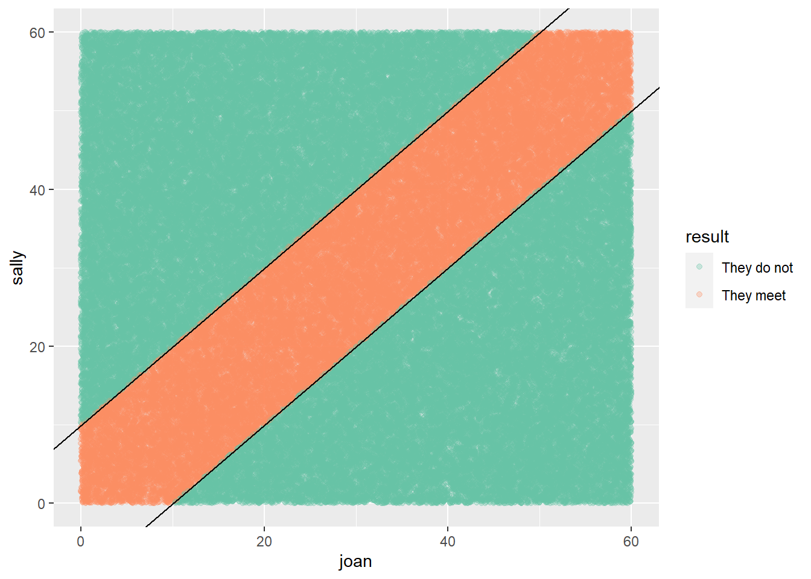
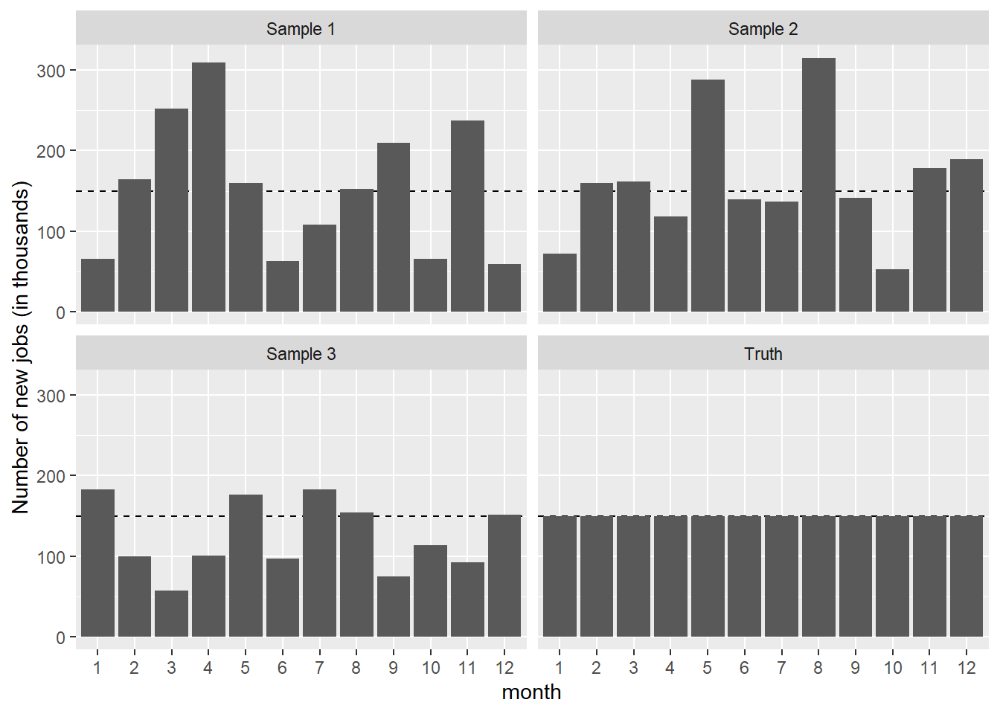
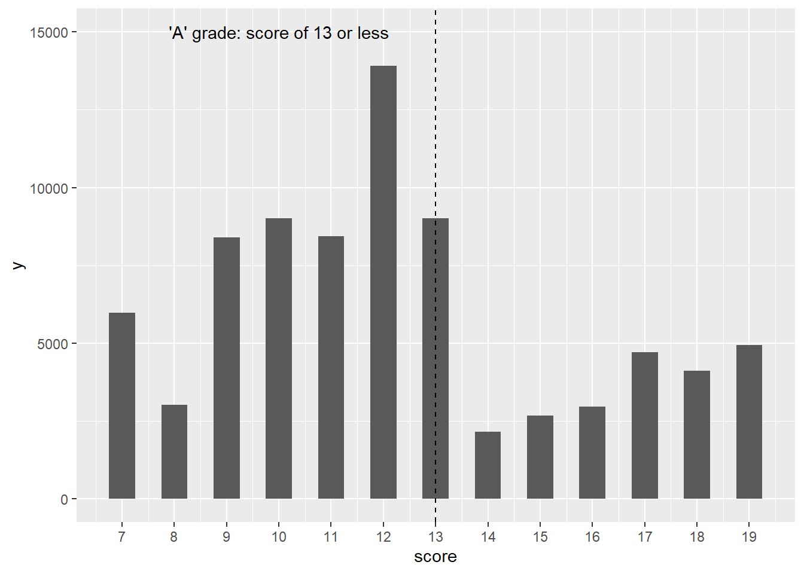
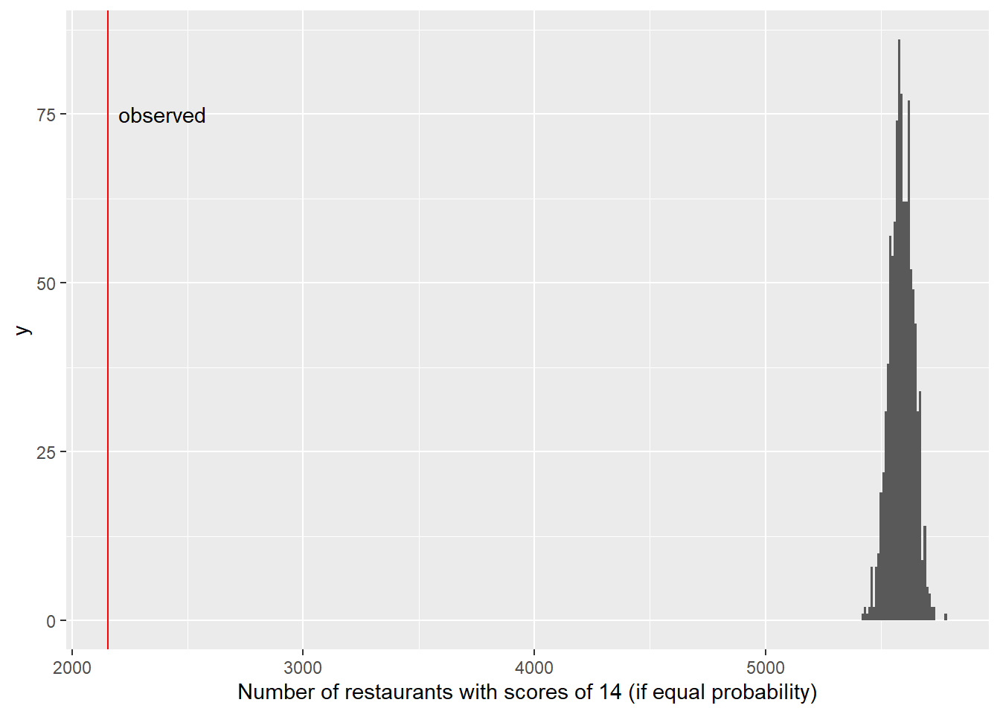
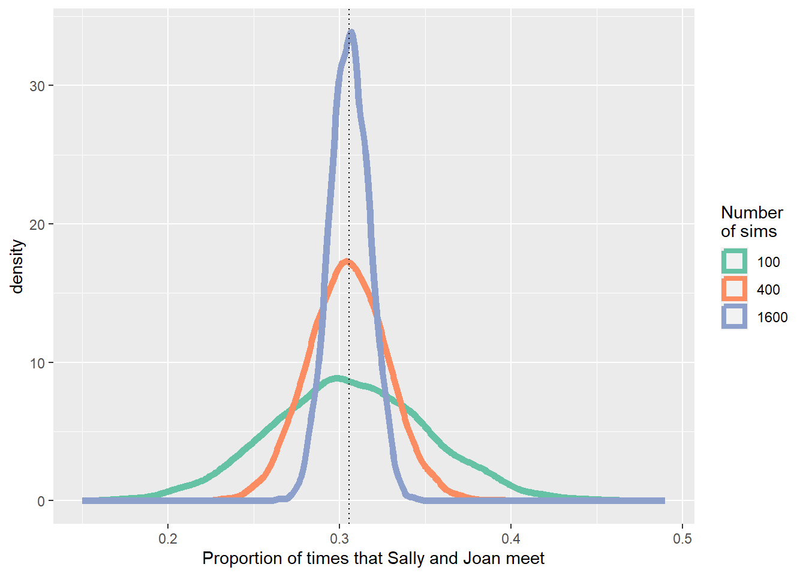

library(tidyverse)
library(mdsr)MDSR Ch 13: Simulation
Section 13.3: Randomizing functions
# uniform random number generator (between 0 and 1)
runif(5)[1] 0.90281366 0.38120678 0.71858119 0.08310657 0.10288359# select one value at random from a vector
select_one <- function(vec) {
n <- length(vec)
ind <- which.max(runif(n))
vec[ind]
}
select_one(letters) # letters are a, b, c, ..., z[1] "j"select_one(letters)[1] "x"# can also sample from other distributions (e.g. rnorm(1))Section 13.4: Simulating variability
Section 13.4.1: The partially-planned rendezvous
n <- 100000
sim_meet <- tibble(
sally = runif(n, min = 0, max = 60),
joan = runif(n, min = 0, max = 60),
result = ifelse(
abs(sally - joan) <= 10, "They meet", "They do not"
)
)
mosaic::tally(~ result, format = "percent", data = sim_meet)result
They do not They meet
69.387 30.613 ggplot(data = sim_meet, aes(x = joan, y = sally, color = result)) +
geom_point(alpha = 0.3) +
geom_abline(intercept = 10, slope = 1) +
geom_abline(intercept = -10, slope = 1) +
scale_color_brewer(palette = "Set2")
If Joan revised her strategy to arrive between 7:10 and 7:50, what would her new probability of meeting up with Sally be?
Section 13.4.2: The jobs report (How not to be misled)
Based on this article from the New York Times.
# simulate a year's worth of jobs reports with no real patterns
jobs_true <- 150
jobs_se <- 65 # in thousands of jobs - this reflect statistical noise described by the Labor Department
gen_samp <- function(true_mean, true_sd,
num_months = 12, delta = 0, id = 1) {
samp_year <- rep(true_mean, num_months) +
rnorm(num_months, mean = delta * (1:num_months), sd = true_sd)
return(
tibble(
jobs_number = samp_year,
month = as.factor(1:num_months),
id = id
)
)
}
# Try our new function
gen_samp(true_mean = 150, true_sd = 65, id = "Sample 1")# A tibble: 12 × 3
jobs_number month id
<dbl> <fct> <chr>
1 270. 1 Sample 1
2 98.5 2 Sample 1
3 177. 3 Sample 1
4 105. 4 Sample 1
5 144. 5 Sample 1
6 162. 6 Sample 1
7 134. 7 Sample 1
8 205. 8 Sample 1
9 254. 9 Sample 1
10 92.4 10 Sample 1
11 187. 11 Sample 1
12 167. 12 Sample 1# params contains info about 3 simulations we want to run
n_sims <- 3
params <- tibble(
sd = c(0, rep(jobs_se, n_sims)),
id = c("Truth", paste("Sample", 1:n_sims))
)
params# A tibble: 4 × 2
sd id
<dbl> <chr>
1 0 Truth
2 65 Sample 1
3 65 Sample 2
4 65 Sample 3df <- params %>%
pmap_dfr(~gen_samp(true_mean = jobs_true, true_sd = ..1, id = ..2))
print(df, n = Inf)# A tibble: 48 × 3
jobs_number month id
<dbl> <fct> <chr>
1 150 1 Truth
2 150 2 Truth
3 150 3 Truth
4 150 4 Truth
5 150 5 Truth
6 150 6 Truth
7 150 7 Truth
8 150 8 Truth
9 150 9 Truth
10 150 10 Truth
11 150 11 Truth
12 150 12 Truth
13 214. 1 Sample 1
14 276. 2 Sample 1
15 72.7 3 Sample 1
16 145. 4 Sample 1
17 129. 5 Sample 1
18 154. 6 Sample 1
19 96.5 7 Sample 1
20 216. 8 Sample 1
21 136. 9 Sample 1
22 160. 10 Sample 1
23 222. 11 Sample 1
24 110. 12 Sample 1
25 53.6 1 Sample 2
26 158. 2 Sample 2
27 143. 3 Sample 2
28 218. 4 Sample 2
29 162. 5 Sample 2
30 59.4 6 Sample 2
31 109. 7 Sample 2
32 190. 8 Sample 2
33 86.7 9 Sample 2
34 201. 10 Sample 2
35 148. 11 Sample 2
36 97.1 12 Sample 2
37 47.2 1 Sample 3
38 213. 2 Sample 3
39 110. 3 Sample 3
40 88.1 4 Sample 3
41 212. 5 Sample 3
42 53.0 6 Sample 3
43 48.2 7 Sample 3
44 188. 8 Sample 3
45 72.4 9 Sample 3
46 -13.9 10 Sample 3
47 167. 11 Sample 3
48 199. 12 Sample 3ggplot(data = df, aes(x = month, y = jobs_number)) +
geom_hline(yintercept = jobs_true, linetype = 2) +
geom_col() +
facet_wrap(~ id) +
ylab("Number of new jobs (in thousands)")
Section 13.4.3: Restaurant health and sanitation grades
Health inspectors in New York City assign a score to restaurants based on an unannounced yearly inspection. Scores 0-13 receive an A, 14-27 receive a B, and those 28 or above receive a C. There seems to be some strange patterns near the threshold of 13…
minval <- 7
maxval <- 19
violation_scores <- Violations %>%
filter(lubridate::year(inspection_date) == 2015) %>%
filter(score >= minval & score <= maxval) %>%
select(dba, score)
ggplot(data = violation_scores, aes(x = score)) +
geom_histogram(binwidth = 0.5) +
geom_vline(xintercept = 13, linetype = 2) +
scale_x_continuous(breaks = minval:maxval) +
annotate(
"text", x = 10, y = 15000,
label = "'A' grade: score of 13 or less"
)
# a simple simulation where scores of 13 and 14 are equally likely
scores <- mosaic::tally(~score, data = violation_scores)
scoresscore
7 8 9 10 11 12 13 14 15 16 17 18 19
5985 3026 8401 9007 8443 13907 9021 2155 2679 2973 4720 4119 4939 mean(scores[c("13", "14")])[1] 5588random_flip <- 1:1000 %>%
map_dbl(~mosaic::nflip(scores["13"] + scores["14"])) %>%
enframe(name = "sim", value = "heads")
head(random_flip, 3)# A tibble: 3 × 2
sim heads
<int> <dbl>
1 1 5562
2 2 5646
3 3 5456# compare observed scores of 14 with expected number if 13 and 14 equally likely
ggplot(data = random_flip, aes(x = heads)) +
geom_histogram(binwidth = 10) +
geom_vline(xintercept = scores["14"], col = "red") +
annotate(
"text", x = 2200, y = 75,
label = "observed", hjust = "left"
) +
xlab("Number of restaurants with scores of 14 (if equal probability)")
Section 13.6: Key principles of simulation
Section 13.6.3: Reproducibility and random number seeds
# How many simulations should we do in random rendezvous problem?
campus_sim <- function(sims = 1000, wait = 10) {
sally <- runif(sims, min = 0, max = 60)
joan <- runif(sims, min = 0, max = 60)
return(
tibble(
num_sims = sims,
meet = sum(abs(sally - joan) <= wait),
meet_pct = meet / num_sims,
)
)
}
reps <- 5000
sim_results <- 1:reps %>%
map_dfr(~map_dfr(c(100, 400, 1600), campus_sim))
sim_results %>%
group_by(num_sims) %>%
skim(meet_pct)Variable type: numeric
| var | num_sims | n | na | mean | sd | p0 | p25 | p50 | p75 | p100 |
|---|---|---|---|---|---|---|---|---|---|---|
| meet_pct | 100 | 5000 | 0 | 0.31 | 0.05 | 0.16 | 0.27 | 0.30 | 0.34 | 0.47 |
| meet_pct | 400 | 5000 | 0 | 0.31 | 0.02 | 0.22 | 0.29 | 0.30 | 0.32 | 0.38 |
| meet_pct | 1600 | 5000 | 0 | 0.31 | 0.01 | 0.26 | 0.30 | 0.31 | 0.31 | 0.34 |
sim_results %>%
ggplot(aes(x = meet_pct, color = factor(num_sims))) +
geom_density(linewidth = 2) +
geom_vline(aes(xintercept = 11/36), linetype = 3) +
scale_x_continuous("Proportion of times that Sally and Joan meet") +
scale_color_brewer("Number\nof sims", palette = "Set2")
# One more important idea: seeds produce the same list of random values
set.seed(1974)
campus_sim()# A tibble: 1 × 3
num_sims meet meet_pct
<dbl> <int> <dbl>
1 1000 308 0.308campus_sim()# A tibble: 1 × 3
num_sims meet meet_pct
<dbl> <int> <dbl>
1 1000 331 0.331set.seed(1974)
campus_sim()# A tibble: 1 × 3
num_sims meet meet_pct
<dbl> <int> <dbl>
1 1000 308 0.308campus_sim()# A tibble: 1 × 3
num_sims meet meet_pct
<dbl> <int> <dbl>
1 1000 331 0.331